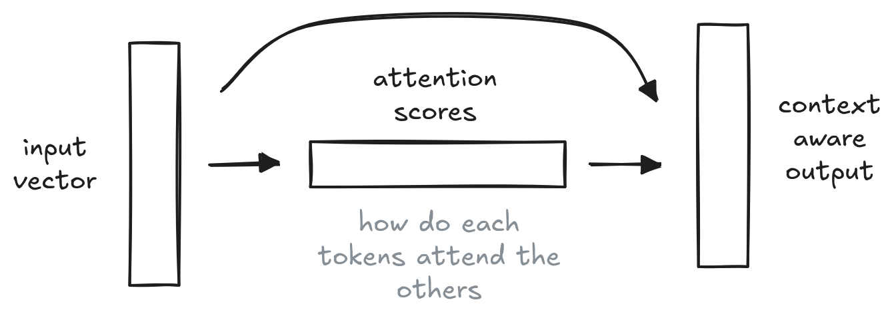
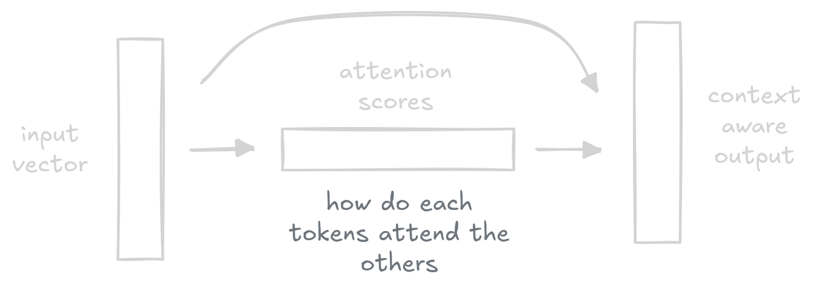
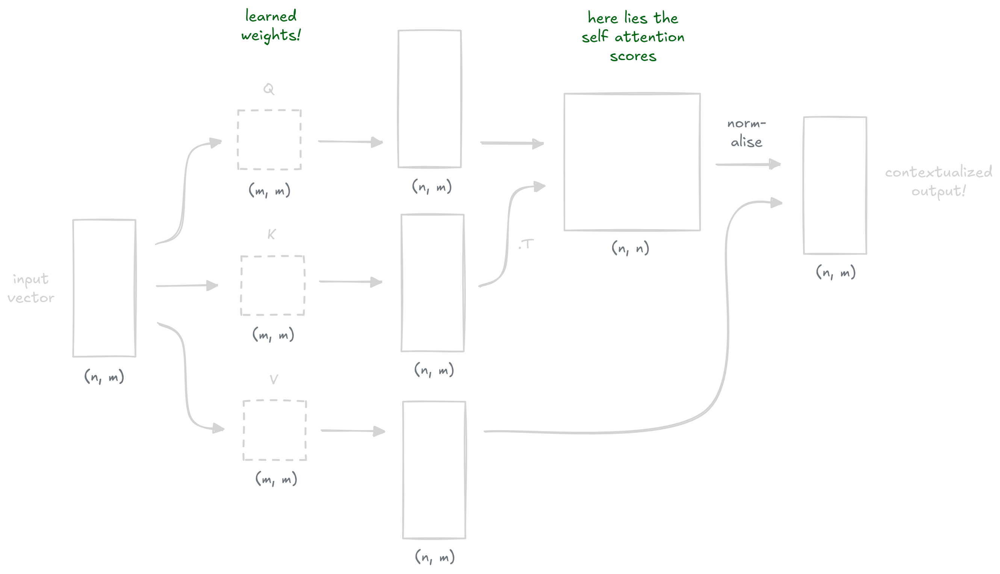

Self-Attention
Self-attention is the core mechanism behind transformers. In this post I try to build some intuition for how it actually works.
The idea is fairly simple: for every pair of tokens we compute an attention score, and we use those scores to take a weighted average of the tokens.


The trick is that we project the input through three learned weight matrices — $Q$ (queries), $K$ (keys), and $V$ (values) — and through these learned projections, we compute the attention scores and apply them to the values.


This is captured in the following formula (the softmax and division by $\sqrt{d_k}$ is for normalization and numerical stability):
$$ \text{Attention}(Q, K, V) = \text{softmax}\!\left(\frac{QK^T}{\sqrt{d_k}}\right) V $$Let's imagine a noisy input signal.
It would be very cool to generate an output signal containing a new signal with contextual information, like a smoothed version of the input signal! We could hand-craft $W_Q$, $W_K$ and $W_V$ so that: the attention scores are high for tokens that are close to each other, and that the retrieved values are the average of the neighbors.
For a 1D input signal, $W_Q$ and $W_K$ can only be 1x1 matrices, so it's not possible to build anything very interesting for our case. However, if we augment the input dimensions, we can start having a lot more fun!
We can engineer $Q$ and $K$ so that their dot product computes $-(p_i - p_j)^2$. After softmax, this gives a proper Gaussian centered on the diagonal.
Having a look back at our high school math formulas:
$$ -(p_i - p_j)^2 = -p_i^2 + 2\,p_i\,p_j - p_j^2, $$each term only depends on $p_i$ or $p_j$, not both. A dot product $Q_i \cdot K_j$ is a sum of products that each pair one coordinate from $i$ with one from $j$, so any term that depends only on $p_i$ has to ride on a constant coming from the $j$ side (and vice versa). If we stuff quadratic position features into the input and route each term to its own dimension via $W_Q$ and $W_K$, the dot product reconstructs $-(p_i - p_j)^2$ for free:
X_4d = np.column_stack([noisy_signal, positions, positions**2, np.ones(n)])
W_Q = np.array([ # Q_i = [sqrt(2)*pos_i, -pos_i^2, 1]
[0, 0, 0],
[np.sqrt(2), 0, 0],
[0, -1, 0],
[0, 0, 1],
])
W_K = np.array([ # K_j = [sqrt(2)*pos_j, 1, -pos_j^2]
[0, 0, 0],
[np.sqrt(2), 0, 0],
[0, 0, -1],
[0, 1, 0],
])
W_V = np.array([[1], [0], [0], [0]]) # V_j = noisy_signal[j]
scores = (X_4d @ W_Q) @ (X_4d @ W_K).T # = -(pos_i - pos_j)^2
weights = softmax(scores / temperature)
output = weights @ (X_4d @ W_V)Here's that engineered attention head running live in your browser. The dashed line is the ground-truth sine, the dots are the noisy observations, and the solid line is what attention outputs. The square on the right is the attention matrix — row $i$ shows how much token $i$ attends to every other token.
A few things to play with: turn $\sigma$ up and the noisy dots scatter wildly — yet a moderate temperature still recovers a clean sine. Push $\tau$ toward $0$ and the attention matrix collapses to the identity (each token only sees itself, so no smoothing happens); push it up and the matrix turns uniform (each token averages everything, flattening the signal toward $0$). Increasing $N$ gives more samples per period, sharpening the result.